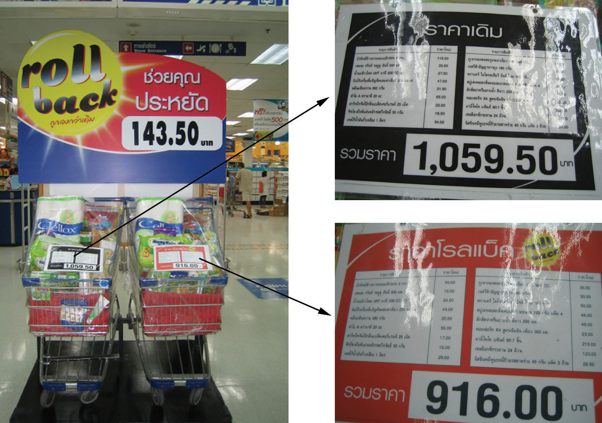
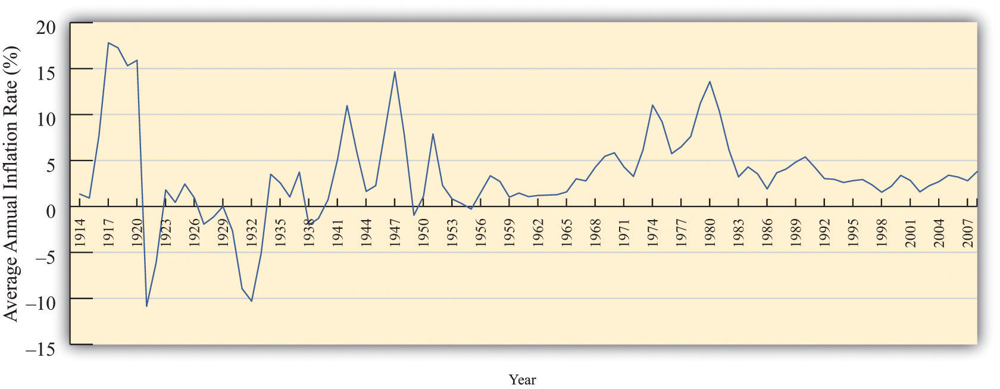
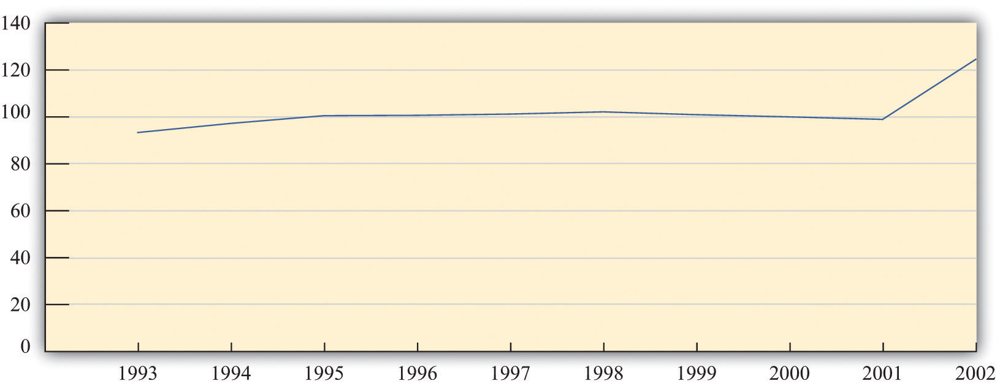

After you have read this section, you should be able to answer the following questions:
If nominal GDP increased in Argentina but real GDP did not, then prices must have increased. So now we look in more detail at the measurement of prices.
Remember that we defined the change in prices as follows:
We can use the data in Table 18.1 "Calculating Nominal GDP" to calculate this ratio as well. This time, however, we compare the cost of the same basket of goods (in this case, output in 2013) according to the prices prevailing at two different times. The basket of goods in 2013 is shown in Table 18.4 "Calculating the Price Index" as the quantities of the three goods and services produced that year: 12 T-shirts, 60 music downloads, and 5 meals. As we saw earlier, the cost in dollars of this basket of goods and services is $442.
Table 18.4 Calculating the Price Index
| Year | T-shirts | Music Downloads | Meals | Cost of 2013 Basket ($) | Price Index | |||
|---|---|---|---|---|---|---|---|---|
| Price ($) | Quantity | Price ($) | Quantity | Price ($) | Quantity | |||
| 2012 | 20 | 12 | 1 | 60 | 25 | 5 | 425 | 1.00 |
| 2013 | 22 | 12 | 0.80 | 60 | 26 | 5 | 442 | 1.04 |
Table 18.4 "Calculating the Price Index" also shows the total cost of consuming the 2013 basket in 2012, which we already know is $425. Thus the price index for 2012 is $425/$425 = 1, and the price index for 2013 is $442/$425 = 1.04.Frequently, the value for the price index is multiplied by 100, so the price index for 2013 would be given as 104. For the simple three-good economy described in Table 18.1 "Calculating Nominal GDP", we therefore have the following:
Prices increased by 4 percent, real GDP increased by 6.25 percent, and nominal GDP increased by 10.5 percent.
To summarize, the basic principle for calculating inflation is as follows: (1) We decide on a bundle of goods and look at how much it costs in a given year. (2) Then we look at the same bundle of goods in the following year and see how much it costs. (3) The ratio of the two is called a price indexA measurement of the cost of a bundle of goods in a particular year relative to a base year. and provides a measure of one plus the inflation rateThe growth rate of the price index from one year to the next..
Toolkit: Section 31.8 "Correcting for Inflation"
A price index for a given year is calculated as the cost of a bundle of goods in that year divided by the cost of the same bundle in the base year. The growth rate of the price index from one year to the next is a measure of the inflation rate.
There are many different price indices that are constructed and used for different purposes. They can be constructed for particular categories of goods or regions, for example. If you listen to the news, you may hear references to the Producer Price Index or the Wholesale Price Index. Ultimately, the differences among different price indices simply come down to the bundle of goods that is chosen.
Figure 18.7 "An Example of a Price Index" shows an example of a very particular price index that was used by a supermarket in Thailand to advertise its prices. The store placed two supermarket carts at the entrance with the same bundle of goods in each. The one on the left, with the black label, showed the cost of this cartload of goods at the old prices. It used to cost 1,059.50 Thai baht (approximately US$28). The one on the right, with the red label, showed that the cost of this same bundle of goods was now 916.00 Thai baht. The reduction in price for the basket of goods was 143.50 Thai baht, or about 13.5 percent.
Figure 18.7 An Example of a Price Index
A supermarket in Phuket, Thailand, used an actual basket of groceries to show that its prices had been reduced. This is an example of a price index.
Source: Image taken by the authors.
In this book, we use price indices that measure the general level of inflation. There are several such measures, but we do not need to worry about this. The differences among these different measures are usually small and typically unimportant for our basic understanding of the economy. The measure of inflation that we have used so far is called the GDP deflatorA price index that uses as the bundle of goods everything that goes into GDP., a price index that uses as the bundle of goods everything that goes into GDP. A more common measure of inflation is the Consumer Price Index (CPI)A price index that uses as the bundle of goods the typical purchases of households., which uses as the bundle of goods the typical purchases of households.
The CPI is the most familiar measure of prices. When economic commentators speak of inflation, they usually mean the percentage change in the CPI. As the name suggests, the CPI is intended to measure inflation as consumers experience it. The bundle of goods included in the CPI is supposed to correspond to the bundle of goods purchased by a typical household. This means that certain goods that are included in GDP do not show up in the CPI. For example, an increase in the price of stealth bombers does not show up in the CPI because (we hope!) households do not buy stealth bombers. However, stealth bombers do show up in the GDP deflator. At the same time, certain goods that are not part of GDP are included in the CPI—most importantly, consumer goods that are imported from other countries. Because imported goods are not produced in the domestic economy, they do not show up in the GDP deflator; however, because domestic consumers purchase imported goods, they do show up in the CPI.
Households differ dramatically in their consumption patterns, so different households have very different experiences of inflation. An individual who drives 100 miles daily to get to work views variations in the price of gasoline very differently from someone who rides a bicycle to work. The CPI captures the average experience of all households, which can be quite different from the actual experience of an individual household.
Figure 18.8 "The Inflation Rate in the United States, 1914–2008" shows the CPI inflation rate (that is, the percentage change of the CPI) from 1914 to 2008 in the United States.Inflation data and more details about the construction of price indices can be found at the website of the Bureau of Labor Statistics (BLS; http://www.bls.gov). In some early years, prices actually decreased from one year to the next, meaning that the inflation rate was negative. Since 1960, however, the United States has experienced a positive inflation rate.
Figure 18.8 The Inflation Rate in the United States, 1914–2008
Figure 18.9 "The Price Level in Argentina" shows the price level in Argentina between 1993 and 2002. The most striking thing about this picture is that there was very little inflation for most of this period. In the final year, however, prices increased substantially. Notice that our picture for the United States shows the inflation rate, whereas for Argentina we are looking at the level of prices. Either way of presenting the data is valid, but it is critical to understand the difference between them. Make sure you understand the difference between the level of prices and the percentage change in prices.
Figure 18.9 The Price Level in Argentina
The price level in Argentina was roughly constant between 1993 and 2001. However, there was a big jump in the price level in 2002.
Source: International Monetary Fund World Economic Outlook database (http://www.imf.org/external/pubs/ft/weo/2010/01/index.htm).
The actual calculation of the CPI is more complicated than our example suggests. The Bureau of Labor Statistics (BLS; http://www.bls.gov/cpi) is the US government agency that is responsible for this calculation, while other countries have similar agencies. The BLS procedure is, in essence, the one we have described: it compares the cost of the same bundle of goods in different years. However, the BLS confronts several difficulties that we have ignored so far.
Quality changes. Imagine that you now work for the BLS (you took this job after you left the International Monetary Fund [IMF]) and are asked to look at changes in the price of laptop computers. You decide to use the IBM ThinkPad computer.For the history of the ThinkPad, see “ThinkPad: A Brand That Made History,” Lenovo, accessed June 28, 2011, http://www.pc.ibm.com/ca/thinkpad/anniversary/history.html; for the 2011 specifications and prices, see “Lenovo Announces Premium ThinkPad Edge E220s, E420s SMB Notebooks,” ThinkPads.com, January 3, 2011, accessed July 20, 2011, http://www.thinkpads.com/2011/01/03/lenovo-announces-premium-thinkpad-edge-e220s-e420s-smb-notebooks. You discover that in 1992 a ThinkPad cost $4,300 on average. Then you find that it is possible to purchase a ThinkPad in 2011 for $899. You calculate the percentage change in the price as ($899 − $4,300)/$4,300 = −$3,401/$4,300 = −0.79 and conclude that the ThinkPad is 79 percent cheaper than two decades previously. You report this to your boss and then go home.
But then you start to worry. The 2011 ThinkPad is nothing like the 1992 version. The 1992 computer had 120 MB of memory and weighed over 5.5 pounds. The 2011 ThinkPad has 4 GB of memory and weighs 2 pounds less. It has a vastly bigger hard drive, wireless Internet connection, and a superior display. In short, there were huge quality improvements over this period. A computer with the specifications of the 1992 ThinkPad would be worth much less than $899. By ignoring the improvements in quality, you have understated how much the price of computers has fallen.
This problem is particularly acute for computers, but it applies to all sorts of different goods. The new car that you purchase today is very different from a car that your mother or your grandfather might have bought. Cars today come equipped with computerized braking systems, global positioning system (GPS) navigational tools, and numerous other sophisticated engineering features. They are also much more reliable; your grandparents will tell you that cars used to break down all the time, whereas now that is a relatively rare event. It would be a big mistake to say that a 2012 automobile is the same as a 1961 automobile.
Perhaps these seem like minor details in the calculation of the CPI. They are not. A government commission chaired by the economist Michael Boskin provided an extensive report on biases in computing the CPI in 1996. The Boskin Commission concluded the following: “The Commission’s best estimate of the size of the upward bias looking forward is 1.1 percentage points per year. The range of plausible values is 0.8 to 1.6 percentage points per year.” That is, the Boskin Commission concluded that if inflation as measured by the CPI was, say, 3.1 percent, the true inflation rate was only 2 percent. In response to these concerns with measurement, the BLS responded by taking actions to reduce the biases in the measurement of the CPI and deal more effectively with the introduction of new goods.For the complete Boskin Commission Report, see Advisory Commission to Study the Consumer Price Index, “Toward a More Accurate Measure of the Cost of Living,” Social Security Administration, December 4, 1996, accessed June 28, 2011, http://www.ssa.gov/history/reports/boskinrpt.html. For the BLS response to the report, see “Consumer Price Index: Executive Summary,” Bureau of Labor Statistics, October 16, 2011, accessed June 28, 2011, http://www.bls.gov/cpi/cpi0698b.htm.
The data on nominal and real GDP in Argentina illustrate the dangers of looking at nominal rather than real variables. Had you looked at only nominal GDP, you would have concluded that the Argentine economy had been growing between 1993 and 2002, when it was actually stagnating.
But many economic statistics—not only nominal GDP—are typically quoted in terms of dollars (pesos, euros, ringgit, or whatever the currency of the country is). To make sense of such statistics, we must understand whether changes in these statistics represent real changes in the economy or are simply a result of inflation.
Toolkit: Section 31.8 "Correcting for Inflation"
If you have some data expressed in nominal terms (for example, in dollars) and you want to covert them to real terms, use the following steps.
Here is an example of how to correct for inflation. Suppose that a sales manager wants to evaluate her company’s sales performance between 2000 and 2005. She gathers the sales data shown in Table 18.5 "Sales, 2000–2005".
Table 18.5 Sales, 2000–2005
| Year | Sales (Millions of Dollars) |
|---|---|
| 2000 | 21.0 |
| 2001 | 22.3 |
| 2002 | 22.9 |
| 2003 | 23.7 |
| 2004 | 24.1 |
| 2005 | 24.7 |
At first glance, these numbers look reasonably encouraging. Sales have grown every year between 2000 and 2005. But then she remembers that these data are in nominal terms, and there was also some inflation over this time period. So she decides to correct for inflation. She first goes to the Economic Report of the President and downloads the data in Table 18.6 "Consumer Price Index, 2000–2005".See Economic Report of the President, 2011, Table B-60, accessed June 28, 2011, http://www.gpoaccess.gov/eop. She decides to use 2000 as the base year—she wants to measure sales in year 2000 dollars. So there are two steps to her calculations, as shown in Table 18.7 "Sales Data Corrected for Inflation, 2000–2005". First, she takes the CPI series and divides every term by the 2000 value (that is, 172.2). This gives the third column of Table 18.7 "Sales Data Corrected for Inflation, 2000–2005", labeled “Price Index.” Then she divides each of the sales figures by the corresponding price index to obtain the real (that is, corrected for inflation) value of sales. These are given in the final column of the table.
Table 18.6 Consumer Price Index, 2000–2005
| Year | CPI |
|---|---|
| 2000 | 172.2 |
| 2001 | 177.1 |
| 2002 | 179.9 |
| 2003 | 184.0 |
| 2004 | 188.9 |
| 2005 | 195.3 |
Table 18.7 Sales Data Corrected for Inflation, 2000–2005
| Year | CPI | Price Index (Base = 2000) | Sales (Millions of Dollars) | Real Sales (Millions of Year 2000 Dollars) |
|---|---|---|---|---|
| 2000 | 172.2 | 1.00 | 21.0 | 21.0 |
| 2001 | 177.1 | 1.03 | 22.3 | 21.7 |
| 2002 | 179.9 | 1.04 | 22.9 | 21.9 |
| 2003 | 184.0 | 1.06 | 23.7 | 22.2 |
| 2004 | 188.9 | 1.10 | 24.1 | 22.0 |
| 2005 | 195.3 | 1.13 | 24.7 | 21.8 |
We can see that the sales data are much less rosy after we account for inflation. Sales were increasing between 2000 and 2003 in real terms, but real sales decreased in 2004 and 2005. Had she just looked at the dollar measure of sales, she would have completely missed the fact that the business had experienced a downturn in the last two years.
Economic statistics reported in the news or used by businesspeople are very often given in nominal rather than real terms. Perhaps the single most important piece of “economic literacy” that you can learn is that you should always correct for inflation. Likewise, you should be on your guard for misleading statistics that fail to make this correction. Here is an example from an article that appeared in the Washington Post. “The Clinton recovery has been far less egalitarian than the much-criticized Reagan ‘era of greed.’ Between 1990 and 1995, the [real average] family income actually declined slightly while the number of people with a net worth over $1 million more than doubled.”See J. Kotkin and D. Friedman, “Keep the Champagne on Ice,” The Washington Post, reprinted in The Guardian Weekly, June 7, 1998. In fact, the quote in the newspaper was even more misleading because it did not even make it clear that the family income figure was adjusted for inflation.
Can you see why this sentence is so misleading? It mixes together a real measure and a nominal measure in the same sentence. Real family income—that is, family income corrected for inflation—declined in the first half of the 1990s. But the number of millionaires is a nominal measure. In a time of inflation, we would expect to have more millionaires, even if people are not really getting any richer.
The BLS has an inflation calculator on its website (http://data.bls.gov/cgi-bin/cpicalc.pl), which is shown in Figure 18.10 "BLS Inflation Calculator".
Figure 18.10 BLS Inflation Calculator
You enter an amount and two different years, and then it tells you the other amount. Explain the calculation that this program performs.